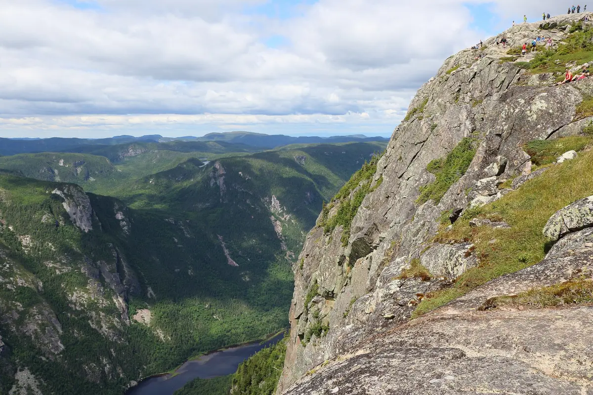

Acropole des Draveurs, sobre las Hautes-Gorges
Actualizado el 21 de noviembre de 2026
Una subida corta y empinada hasta cumbres desnudas que caen a pico sobre el río Malbaie, en uno de los valles más profundos al este de las Rocosas.

- Distancia
- Unos 10,4 km ida y vuelta hasta la primera cumbre, 11,2 km hasta la tercera
- Desnivel
- Unos 800 m
- Duración
- De 4 a 6 h
- Dificultad
- Difícil, con escalones de piedra
- Salida
- Aparcamiento del sendero, en el valle, dentro del parque
- Temporada
- Cerrado parte del año: compruébalo antes de ir
Mapa

Perfil de altitud

El recorrido
El sendero deja el fondo del valle y sube casi sin descanso, entre arces y luego coníferas, por raíces y grandes escalones de piedra. Es corto para su altura: casi todos los 800 m se ganan en pocos kilómetros.
Cerca de lo alto, el bosque se abre sobre la roca desnuda y los árboles achaparrados. La primera cumbre ya ofrece la vista famosa: el río Malbaie serpenteando en el fondo del cañón, entre paredes de cientos de metros. Siguen otras dos cumbres por la cresta; la tercera llega a unos 1048 m.
Baja por el mismo camino, con calma en los escalones.
Conviene saber
- Duro para las rodillas. La bajada exige tanto como la subida. Los bastones ayudan.
- Más frío arriba. Las cumbres están expuestas: lleva una capa de abrigo, aunque haga calor en el valle.
- Sendero de temporada. El sendero de la Acropole cierra parte del año. Consulta las fechas y el estado en sepaq.com.
- Acceso al parque. Los parques nacionales de Quebec cobran entrada.
Fotos




Guarda el día con Arpente
Toca grabar al salir y guarda el iPhone en el bolsillo. Arpente dibuja tu recorrido y mide la distancia, el tiempo y el desnivel, incluso con la pantalla apagada. Añade una foto y una nota, y la salida queda en tu diario. Descubre Arpente.
Otras salidas
 Mont Albert11,6 km ida y vuelta por la cara norte, o un circuito de 17,3 km
Mont Albert11,6 km ida y vuelta por la cara norte, o un circuito de 17,3 km Sentier de la StatueUnos 7,6 km ida y vuelta, o 3,6 km ida y vuelta hasta el mirador Bellevue
Sentier de la StatueUnos 7,6 km ida y vuelta, o 3,6 km ida y vuelta hasta el mirador Bellevue Canal de Lachine14,5 km solo ida, del Viejo Puerto a Lachine
Canal de Lachine14,5 km solo ida, del Viejo Puerto a Lachine Mont RoyalUnos 1,4 km desde lo alto de la calle Peel al mirador, unos 2 km hasta la cruz
Mont RoyalUnos 1,4 km desde lo alto de la calle Peel al mirador, unos 2 km hasta la cruz
El trazado del mapa es orientativo, calculado con BRouter sobre datos de OpenStreetMap (© colaboradores de OpenStreetMap, ODbL); altitudes SRTM. No sustituye al mapa oficial del parque. Las distancias, desniveles y tiempos de la tabla vienen de fuentes de los parques: consulta las condiciones antes de ir.